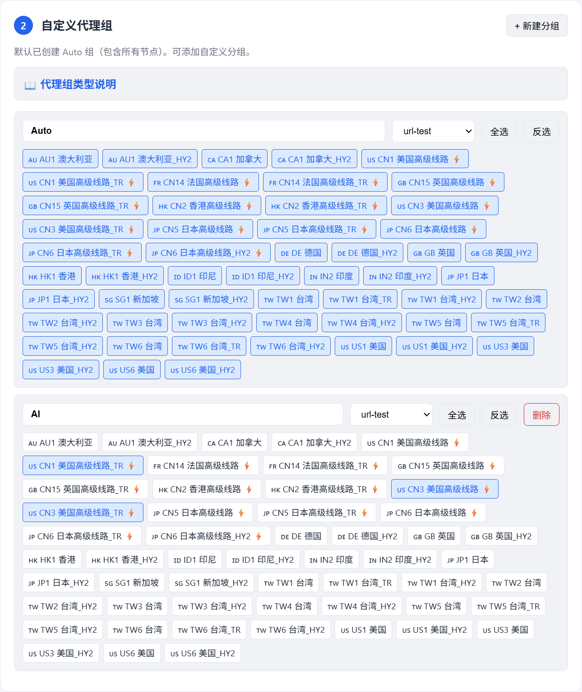
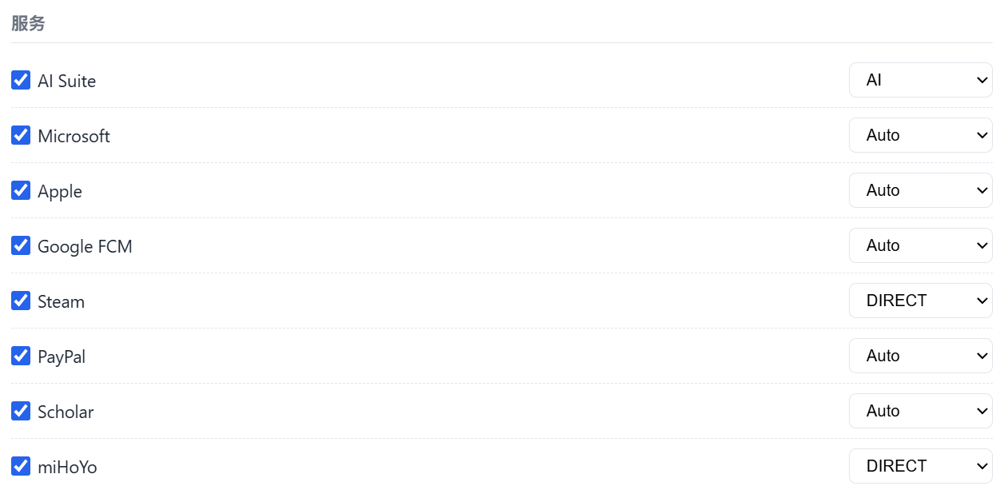
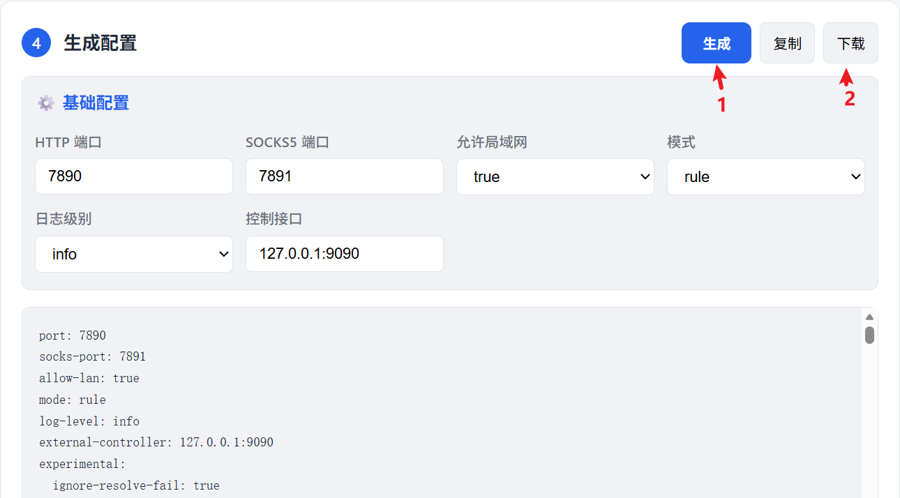
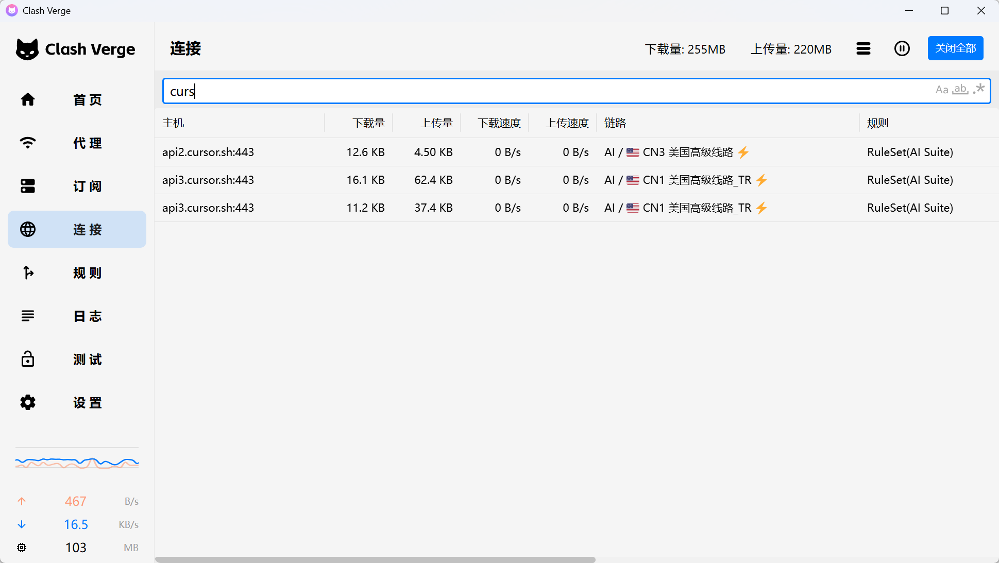

clash的本质是分析URL，根据规则，判断是否需要转发，以及如何转发。我们可以手动编写yaml，也可以用一些在线工具，比如说我自己写的一个，https://xuzhougeng.top/tools/clashmate/
可以上传已有的记录节点信息的YAML文件，例如，我用的PandaFan，见https://xuzhougeng.top/blog/2025/12/09/index.html, 当然也可以自己添加节点。

接着，我们可以自定义一些代理组。代理组的这个好处在于，比如说我的希望后续AI相关的流量走的都是美国，我就可以建立一个名字叫做AI的代理组，里面选择美国相关的节点
下一步是规则，你可以全选，也可以就开启部分。每个规则中，你可以设置对应的代理组，比如说我AI Suite写的就是AI，这样子所有跟目前跟目前AI相关的国外站点，都会走AI相关的节点。
最后生成配置文件，下载到本地，用于提供给clash相关的客户端。
例如，https://www.clashverge.dev/，配置完之后，就可以发现cursor相关的流量，因为匹配到AI Suite的规则，所以走的是AI的代理组。
 Return_To_Blog_Index